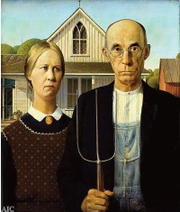

Grant Wood (1891-1942) tarafından yapılan Amerikan Gotik, Amerikan sanatının en yaygın olarak bilinen eserlerinden biridir. Resim çoklukla orta Amerika’nın bir hicvi olarak görülmesine rağmen, yaratıcı tarafından öyle olmasına niyetlenilmemiştir.

Wood, Iowa’da bir çiftlikte hayatının ilk on yılını geçirdi. Minneapolis, Chicago ve Paris’te sanat çalıştıktan sonra, gençliğinin dünyasını resmetmek için yeteneğini uygulamaya koyduğu memleketine döndü.
Ağustos 1930’da Wood, “marangoz Gotik” olarak bilinen bir tarzda inşa edilen Eldon, Iowa’daki bir on dokuzuncu yüzyıl evi ile karşılaştı. Evlerinin önünde duran bir çiftçi ile kızını hayal ederek kahverengi kâğıt üzerine hızlı bir eskiz yaptı ve birkaç fotoğraf çekti.
Wood, kıza karşılık model olarak kız kardeşi Nan’ı ve çiftçiye karşılık dişçi Dr. Byron McKeeby’i kullanarak evde kompozisyon üzerinde yeniden çalıştı. Viktoryen fotoğraflardan ve on dokuzuncu yüzyıl portrelerinden ilham alarak dişçiyi korumacı bir baba ve Nan’ı da temiz yüzlü, evlenmemiş kızı olarak dönüştürdü. Her ikisi de Viktoryen döneminin tipik ciddi giysilerini giymişlerdi. Wood, daha önceki bir dönemden olduğunu göstermek için, çiftçinin eline böylesi tarım araçlarının halen kullanıldığı zamanlardan kalan bir saman tırmığı vermişti. Çatallı uçları, evin pencere çerçevelerini tamamlar ve yuvarlak dibi ise iki yüzün oval şeklini tekrarlar. Karakterlerin hareketsiz, taş gibi ifadeleri, erken dönem fotoğraflarda görülen, kişilerin uzun süreler hareketsiz kalmaları istenen anları hatırlatır.
Wood, Chicago Sanat Enstitüsü’nde bir yarışmaya katılmak için resmi tam zamanında bitirdi. Onu şaşırtan bir sonuç olarak resim, bir bronz madalya ile 300 dolar ödül kazandı. Bugün resim Sanat Enstitüsü’nde sürekli olarak sergilenir.
EK BİLGİLER:
1. Saman tırmığı erkekliğin, kötülüğün ve çiftçiliğin bir sembolü olarak yorumlanır.
2. Resimdeki evin panjurları çekilidir ve pencereleri kapalıdır; bu detay, çiftin düşmanca ve korku duyan tavrını vurgular görünmektedir.
3. 1934’te Wood, sanat projelerine eyalet direktörü olarak atandı. Sonraları, Iowa Üniversitesi’ndeki sanat fakültesine katıldı.